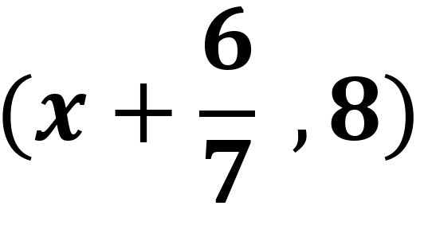
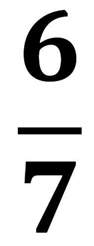

কলকাতা থেকে আসছে স্কুল কমিশনার অফিসার । এদিকে স্কুলে হইচই কি সেই আনন্দ কি সেই মজা । চেচামেচিতে ভরিয়ে দিতাম পুরো স্কুলকে । এমনকি ক্লাসের মনিটর কে ধমক দিয়ে উড়িয়ে দিতাম । সে সব দিনগুলো কি আর ফিরে পাবো কত সুখের ছিল সেই দিনগুলো যখন আমরা ছোট ছিলাম । অনেক সময় মনিটরকেও অনেক মারতাম তার বদলে যখন ক্লাসের মনিটররা স্যারের কাছে নালিশ করতো ফলে স্যাররা আমাদের মারতো । একদিন স্কুলের স্যাররা আমাদের বলল "স্কুল কমিশনার অফিসার" আসছে আমাদের স্কুল দেখতে । তোমরা আজ কেউ ক্লাসে মারামারি চেঁচামেচি কিচির মিচির করবে না । ক্লাস ঘর পরিষ্কার পরিচ্ছন্ন রাখবে ইস্কুল পরিষ্কার রাখবে কেমন । আর হ্যাঁ সরকারি অফিসাররা তোমাদের অনেক প্রশ্ন করতে পারে তোমরা ঠিকঠাক উত্তর দিও । অবশেষে সেদিন এগারোটা বারোটা একটা দুটে তিনটে বেজায় যায় সরকারি অফিসারদের কোন দেখায় নাই। অবশেষে আমরা ভেবে নিলাম যে সরকারি অফিসার আমাদের স্কুলে আসবেনা । কিন্তু আমরা ভুল ভেবেছিলাম । সরকারি অফিসাররা ঠিক তার পরের দিন এলো । আমরা তো অবাক হয়ে গিয়েছিলাম অফিসাররা প্রথমে স্যারদের অফিস ঘরে ঢুকলো তারপর ক্লাস টেনের ঘরে তারপর ক্লাস নাইনের ঘরে এবং সর্বশেষে ক্লাস আমাদের ঘরে ঢুকলো ।
আমরা সবাই উঠে দাঁড়ালাম । তিনি আমাদের ক্লাস থেকে যাবার সময় আমাদের প্রশ্ন করলেন তোমরা কোন ক্লাসে পড়ো ?
আমরা সবাই উত্তর দিলাম ,
ক্লাস এইটে।
পরের প্রশ্নটা একটু কঠিন ছিল — আচ্ছা স্টুডেন্টরা এখন কোথায় আছো?
নিশ্চয়ই স্কুলে আছো ?
তোমরা বলতো SCHOOL এর পুরো নাম কি?
এই প্রশ্নটার উত্তর কারো জানা ছিল না । আমাদের ক্লাসের মান সম্মানের ব্যাপার । কিন্তু প্রশ্নের উত্তরটা আমার জানা ছিল আমি বললাম,
"Sincerity Capacity Honesty Orderliness Obedience and Learning"
কিন্তু এতেও তিনি সন্তুষ্ট হলেন না তিনি আমাদের প্রশ্ন করলেন যে , তোমরা কি জানো কোন দেশে একদিকে সূর্যোদয় হয় তো অন্যদিকে অস্ত যায়?
আরিফ বলল — স্যার এটা তো খুবই সহজ রাশিয়ার দিকে সূর্যোদয় হয় আর অন্যদিকে অস্ত যায়।
এমনটা হওয়ার কারণ হলো রাশিয়া একটি বিশাল বড় দেশ আয়তনের দিক থেকে প্রথম স্থানে রয়েছে।
আচ্ছা বলতো স্টুডেন্টরা ,
 বিন্দুটি y অক্ষের উপর অবস্থিত হলে x-এর মান কত ?
রহমাতুল বলল 8 , আরিফ বলল 0, আমি বললাম 
তোমাদের কারোই হয়নি । তোমরা ভেবেচিন্তে উত্তর দাও ।
এবার শুরু হলো আমাদের আলোচনা । আলোচনা চলাকালীন পুরো ক্লাসটা আবার ফিসফিস করে শব্দ হচ্ছিল ।
এই চুপ করে আলোচনা কর স্যার তো শুনতে পাবে ।
স্যার মনে মনে ভাবছিল এ কেমন স্কুল রে বাবা । বললাম যে আলোচনা করতে এরা অনেক হইচই পাকালো ।
আসলেও ক্লাসে অতটাও হইচই ছিল না সামান্য দিনের তুলনায় ।
আলোচনা করা হলো —
তাহলে কে পারবে বলো?
রুহুল বললো - স্যার উত্তরটা হবে —
Very Good !তোমার নাম কি?
বোর্ডে এসে গ্রাফি এবং কোনটা সমাধান করো ।
রুহুল বোর্ডে লিখল —
বিন্দুটি Y অক্ষের উপর অবস্থিত X এর মান
𝒙 = 𝒙 + , y = 8
যেহেতু y' কক্ষের ওপর অবস্থিত ।
∴ 𝒙 = 0
বা, 𝒙 + = 0
বা, 𝒙 = -
এরপর তিনি আমাদের ক্লাসের সবাইকে পুরস্কার দিয়ে বেরিয়ে গেলেন । তিনি যাওয়ার পর মনে মনে ভাবছেন স্কুলটি অন্য স্কুলের মত নয় এটি হলো অসাধারণ স্কুল । অন্য স্কুলে প্রশ্ন করলে কেউ একটাও পারে না । পড়াশোনা শুধু বই পড়ে না বরং সমাজ থেকে খেলাধুলা থেকে প্রকৃতি থেকে সময়ের থেকে ও বিভিন্ন গ্রন্থ থেকে শিক্ষা গ্রহণ করা যায় । এটি প্রকৃত শিক্ষা । এই স্কুল টা সেরকম অদ্ভুত এক স্কুল ।